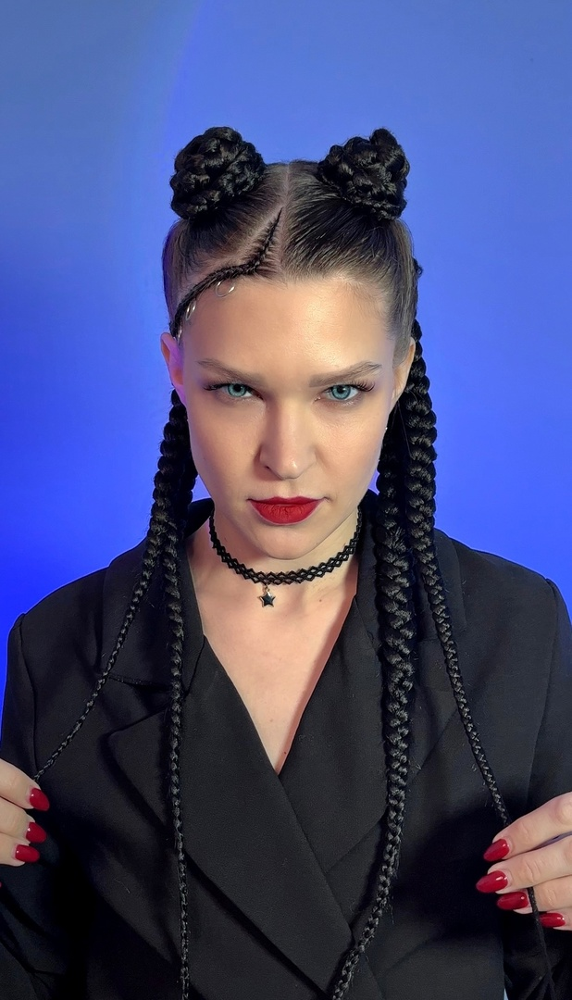
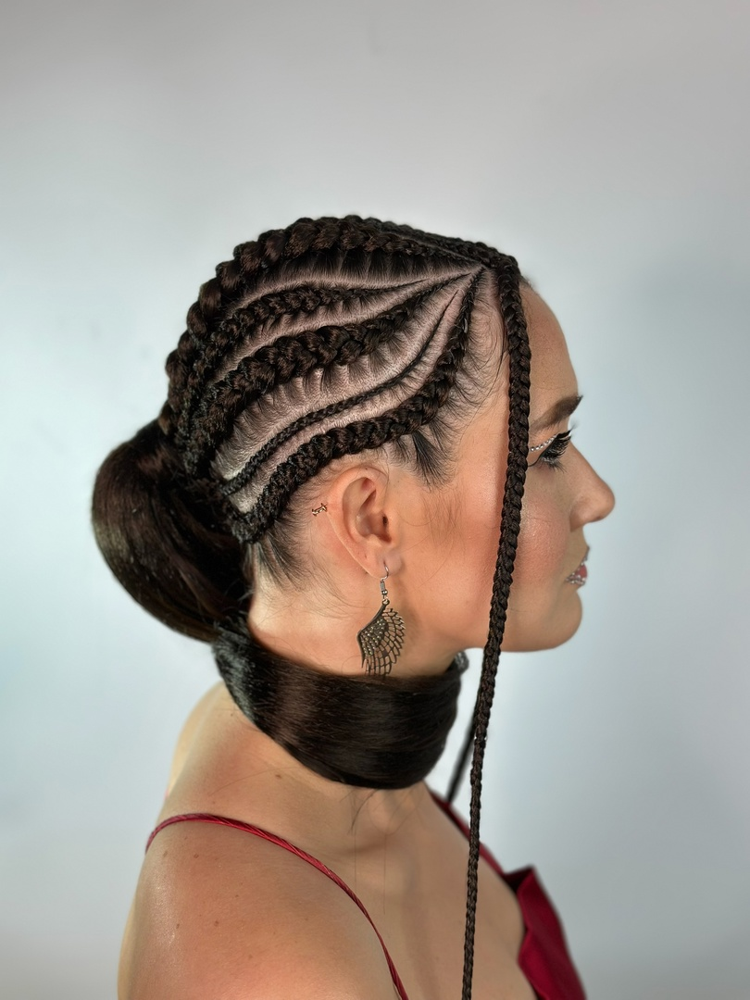
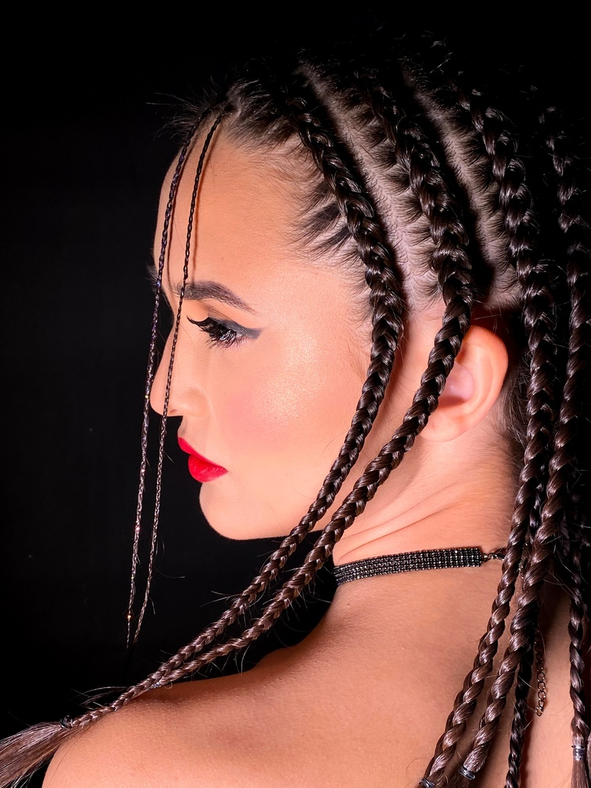
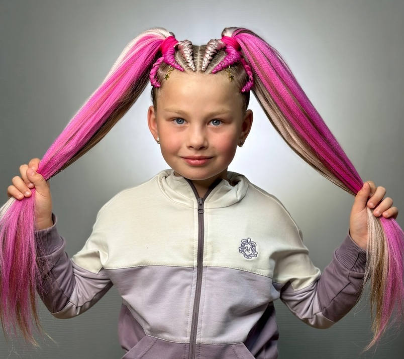

Что нас вдохновляет? И почему мы так сильно верим в маркетинг?
Потому что видим, как меняются жизни людей.
Знакомься, это Люба Веселова – она брейдер, делает прически из кос.
И это интервью, которое мы с ней провели после ее обучения на курсе ВК бабло.
— Расскажи, что было до курса, какой средний доход был в месяц? Сколько клиентов?
— До курса я работала на заводе юристом. Моя ЗП на тот момент была 45 тыс.
Прическами на тот момент я занималась уже не первый год, у меня были клиенты. Но из-за сезонности все было не постоянным: летом густо, зимой пусто.
В среднем тогда мой доход от причесок был: в не сезон 10-15 тыс, в сезон 40-50 тыс.
Из-за основной работы, я принимала клиентов по выходным, до работы и после работы - я тоже принимала клиентов. То есть летом я работала, практически, без выходных, с раннего утра (с 5 утра) и до самого вечера (до 20-21 ч.).
Я очень хотела уволиться, очень. Во-первых, работа юристом ужасно скучная, даже несмотря на то, что в нашем маленьком городе (население менее 20 тыс.чел) это считается престижным местом.
Во-вторых мне очень нравится мое ремесло, и я горела этим. Но страх остаться в не сезон с минимальным доходом, страх что клиентов не будет зимой меня останавливал.
Я не могла принять решения об увольнении. Именно тогда я увидела рекламу про суровых маркетологов, и поняла – это то, что мне сейчас просто необходимо. Купила курс без колебаний)))
— Какие сложности были во время обучения на нашем курсе? Насколько сложно было учиться? За сколько прошла обучение?
— Сложностей вообще никаких! В курсе настолько понятно все разжевано, что разберется и первоклассник.

Кроме того, только после вашего курса я наконец-то поняла что такое «боли» клиента.
Правда! Об этом трубит каждый эксперт, но суть этого выражения я вроде бы и понимала, а вроде бы и нет. И только Вова смог своим простым человечным языком заложить в мою голову про что это и как это)))
А вот курс я проходила долго, но, это все было осознанно))) Объясню. Первую часть курса (до блока по рекламе) я изучила быстро.
Естественно, все тут же применила на практике, и у меня сразу же начало все работать. Да так, что у меня просто не было времени дальше изучать курс. Да и в этом, в общем-то, не было необходимости.
Мне не нужна была реклама, все работало и без нее) Мне в группу стабильно прилетали новые заявки, записи шли практически каждый день.
Конечно, я изучила и всю информацию по рекламе. И запускала ее на практике, с нее я тоже получила первых клиентов.
Сейчас у меня в руках имеется мощный инструмент, и он мне пригодится в дальнейшем. Ведь у меня сейчас готовится свое мощное обучение для таких же мастеров как и я, для тех, кто только желает стать мастером по прическам. И с помощью рекламы я смогу заявить о себе!

— Каково было работать с куратором, что было полезно, мотивировало ли это тебя? Как считаешь, без куратора получилось бы так же?
— Так как мое обучение затянулось больше чем на 3 месяца, то часть обучения я прошла без куратора. В каких-то моментах возникали какие-то вопросы. Но, к счастью, за время пока я находилась в чате, я познакомилась с девочками, соответственно нас объединяло одно - желание развивать свое ремесло.
И эти знакомства помогли мне. Одна голова хорошо, а две лучше.
Поэтому, конечно, с куратором все проходит уверенно. Всегда лучше когда тебя берут и за руку ведут в неизведанное. Так спокойнее и чувствуешь твердую почву под ногами.
— Какие сейчас действия делаешь для привлечения клиентов? Как часто пишешь посты? Запускаешь ли рекламу?
— Сейчас моя группа сама работает на меня. Посты пишу редко, раз в неделю. Могу чаще, а могу реже.
Но, тем не менее, подписки идут каждый день. Записи тоже. Сейчас реклама пока выключена, и будет запущена она уже не на поиск новых клиентов, а на поиск новых мастеров. Буду масштабироваться.

— ВАУ! Как круто!!! А можешь поделиться, как изменилась жизнь, когда увеличился доход? Может что-то купила себе? Съездила в путешествие? Что-то смогла сделать, чего раньше не могла позволить себе?)
— Ооо, это с удовольствием))) Сначала расскажу про свой жуткий страх с увольнением)
Когда в моей голове мысль об увольнении не давала мне покоя, на улице была зима. А зима – это самое скудное время года для многих бьюти-мастеров. Но, у меня было огромное желание уволиться и огромное нежелание ходить на завод. Как раз в то время я уже начала обучаться. И, почему-то, я была уверена, что даже несмотря на то что зима за окном у меня все получится.
Я написала заявление и прям перед самым Новым годом уволилась. Получается 2023 год я начала прям с чистого листа.
Я очень старательно изучала каждый урок ВК бабло и применяла все знания на практике. Я понимала что сейчас все зависит от только от меня.
Каково же было мое удивление, когда я подсчитала свой доход за январь. Я заработала в тот месяц больше, чем получала на заводе. А это не сезон, напоминаю!
Дальше февраль, март, которые тоже считаются самыми тухлыми месяцами) но и в те месяцы я стабильно делала чуть больше чем моя бывшая зп на заводе) Да, я с того времени и до сих пор сравниваю свой доход именно с бывшей зарплатой)
Наступил сезон, горячий и жаркий. Я выросла в доходе в х4!!! Я сама не верила, что такое возможно! Запись ко мне шла плотняком на 2 недели вперед.

Но самый кайф был, когда я решила что хочу устроить себе отпуск и слетать с детьми на море. Я просто зашла на сайт авиакомпании и купила билеты, и устроила нам с детьми отпуск на 16 дней! Мне не надо было ни под кого подстраиваться, мне не нужно было ждать отпуска по графику, я просто взяла и сама устроила отпуск когда захотела!
А еще самый жирный плюс - мы купили с мужем квартиру в другом городе за наличку!!!
Пожалела ли я хоть на разок, что променяла стабильную жизнь на заводе на свое ремесло? Ни разу! У меня все только начинается! И в этом даже очень причастна Женька Брун!
— Сколько сейчас зарабатываешь?
— Сейчас в среднем доход в не сезон 60000-70000₽, клиентов в это время ~20 чел. В сезон 150000-200000₽, клиентов не считала, конечно, ну более 50 чел. За прошлый год я заработала свой первый миллион , даже меньше чем за год я сделала эту цифру. И это тоже мое маленькое достижение, кстати)
*****
Вот ради этого мы занимаемся своим делом!
Для того, чтобы и ты мог изменить свою жизнь и достойно зарабатывать на любимом деле.